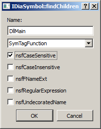
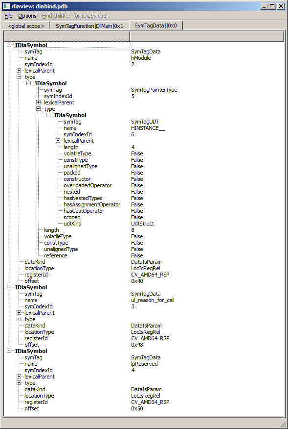

Не так давно я анонсировал свой проект diabind, который является python-биндингом возможностей DIA SDK. Самое вкусное из того, что предоставляет DIA SDK (на мой взгляд), обернуто в интерфейс IDiaSymbol. Это интерфейс с большим числом методов, которые возвращают что-то или генерирую ошибку вызова в зависимости от того, интерпретацией чего они являются. Например: метод get_callingConvention будет работать только для типов функций. В документации достаточно расплывчато и не точно описано для каких символов какие getter'ы будут работать.
Поэтому для GUI-визуализации содержимого отладочной информации я написал скрипт diaview.py, который может рассматриваться и как пример использования diabind. В качестве GUI в скрипте используется PySide (Binaries for Microsoft Windows).
После открытия файла с отладочной информацией (или исполняемого файла, по которому доступна отладочная информация) появляется основная вкладка global scope. Это корневой символ полученный последовательностью вызовов:
- IDiaDataSource::loadDataFromPdb или IDiaDataSource::loadDataForExe
- IDiaDataSource::openSession
- IDiaSession::get_globalScope
Вся дальнейшая работа идет раскрытием дерева символов и исполнением поиска дочерних элементов символа (пункт меню "Find children for IDiaSymbol"). Важно понимать, что поиск дочерних элементов может быть только у символов. И сам поиск применяется именно к тому символу, который в настоящий момент выбран в дереве.
Для демонстрации получим список параметров DllMain. Выбираем единственный символ в global scope и ищем функцию DllMain. Данные поиска идентичны параметрам метода IDiaSymbol::findChildren:

Для найденного символа ищем все дочерние символы SymTagData:

Скрипт diaview.py включен в новый релиз diabind 0.1.0.2, который теперь поддерживает MS DIA от Visual Studio 12.0.
ΞρεΤΙκ